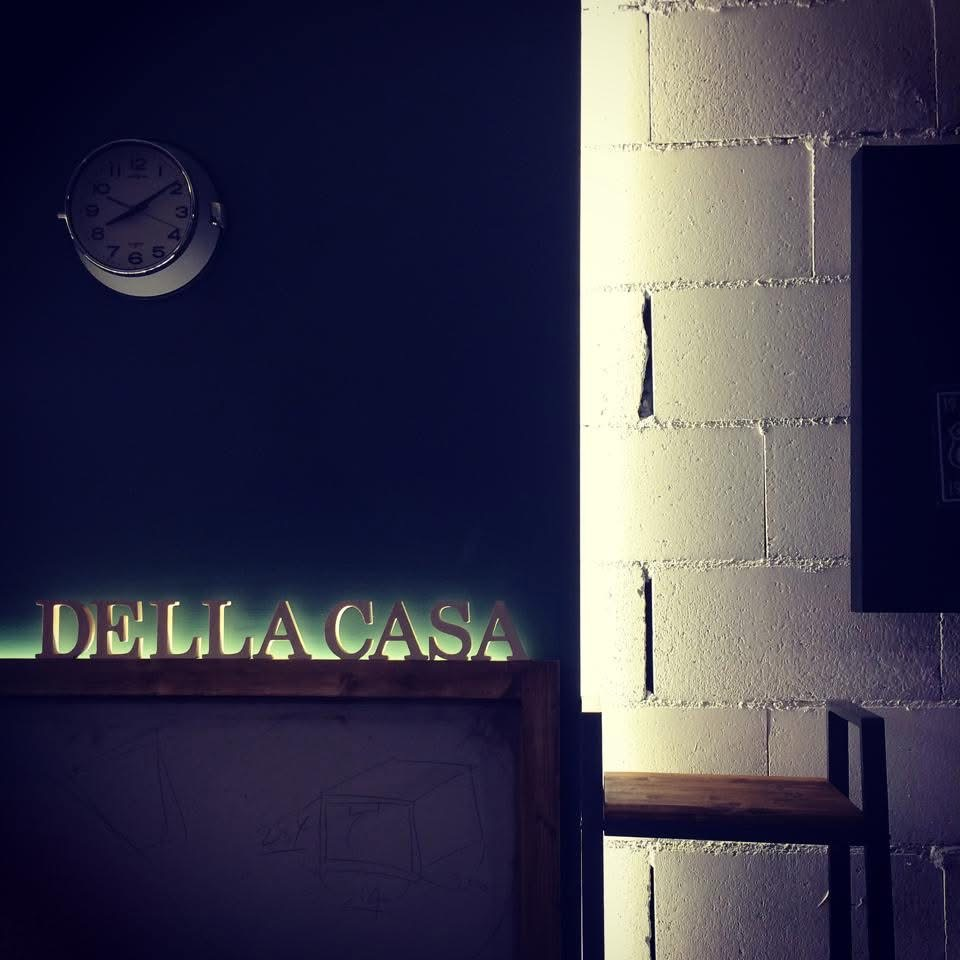

For business owners with a product, place or story to share
Your story. Made visible.
We make films, websites and AI tools that help customers understand your products and place.
See what is inside.
An original HAM MEDIA 3D demonstration
Small decisions in one photograph.
Della Casa in Sinpo, a shop HAM MEDIA’s founder built himself.

Space star · Della Casa, Sinpo
Chosen one by one,
placed, and made whole.
We shape a shop’s real photographs and story into a website.
Choose a detail in the Space star (Korean) ↗
Photographed at the Sinpo shop. The separation, assembly and layered layout are visual storytelling.
HAM MEDIA book promotion · 36 sec · Korean
Four lines before you ask AI.
Turn a question you often answer into a useful one-page guide. Start with our book and free exercise.
Characters, voices and scenes are AI-created.

Words and photographs by Dongmin Ham
The things I love brought me here.


03 / Travel
A Trip with Room to Spare
Read
09 / Cameras
A Monk Cannot Shave His Own Head
Read
08 / Music & audio
Harpsichord, Beneath Keith Jarrett’s Name
ReadMore stories & nine stars

01 / Pens
To Write with the Same Combination Again
Read
02 / Motorcycles
A Bike Parked for Coffee
Read
04 / Bicycles
A Terrace Waiting for Cyclists
Read
05 / Spaces
What a Photo Cannot Tell You About a Chair
Read
06 / Cars
Before Choosing a Car, Picture Your Day
Read
07 / Food
Choosing a Plate Before the Food
ReadPeople to create with
서도윤 · Chief of Staff

Not sure where to begin? Start a conversation about what you would like to do.
Start a conversation (Korean) ↗김다온 · Editor

A colleague who helps find the story in words and photographs, and shape it for the people who will read it.
Talk to Hamjipsa about your story (Korean) ↗손건우 · Technical Director

A colleague who turns ideas into videos, websites and AI tools.
Explore work and services (Korean) ↗HAM MEDIA films include AI characters and voices.
What would you like to make?
Prefer to try it yourself? Turn one question into a page with the AI you already use. All seven lessons are free and in Korean. Start lessons 1–4 on your phone; use a computer for lessons 5–6.